It started in 1977 — an 11-year-old building a mobile robot inspired by the earliest autonomous machines in history. From hand-wired computers and photocell robots to Transputers, parallel AI, and agentic systems — this is a story that spans nearly five decades.
Everything you see here was designed, built, and debugged without AI assistants, without Google, without Stack Overflow — most of it before the internet existed outside universities. Schematics were drawn by hand, components sourced in person from physical shops. The earliest programs were entered in raw binary via toggle switches with only a hex LED for output — no compiler, no assembler, no screen.
At age 11, Lee built his first mobile robot — inspired by W. Grey Walter's "Tortoise" robots from 1948–1949, among the very first electronic autonomous machines ever created. Walter, a neuroscientist at the Burden Neurological Institute in Bristol, built these robots to prove that complex behaviour could emerge from just a few "brain cells." They navigated using a single rotating photocell for sight and a contact switch for touch — no programming, just analogue electronics producing remarkably lifelike behaviour.
Lee's version followed the same principle: a photocell mounted on the front steering-wheel axis, so the robot would steer itself toward light sources — the same elegant trick Walter had used three decades earlier. A child's first robot, built from the same ideas that launched the entire field of autonomous mobile robotics.
Around the same time, Lee built a COSMAC Elf computer — wired by hand from a schematic published in the August 1976 issue of Popular Electronics magazine. Designed by Joseph Weisbecker of RCA, the Elf used the RCA CDP1802 microprocessor — the same chip that would later fly on the Galileo spacecraft. Programs were entered one byte at a time via toggle switches, with output on a hexadecimal LED display. For a 12-year-old in the late 1970s, this was the gateway into computing.
Lee got a Commodore VIC-20 and connected it to his robot experiments — one of the first affordable home computers being used not just for games or BASIC, but as a controller for physical hardware.
Lee ran his own BBS (Bulletin Board System) on a Z80 CP/M kit — two bare PCBs in a rack frame, bought from a small Swedish designer. 256 KB of banked memory (four 64K banks multiplexed), two floppy drives, a hard disk, two RS-232 ports, and two modems. No brand, no case — just boards, wires, and dial-in access for anyone with a modem and a phone line.
In 1984, Lee and a colleague co-founded the Swedish Robot Society. Lee designed robot controller cards for the members — hand-designed and hand-etched PCBs for driving motors, reading sensors, and interfacing with the microcomputers of the era. Through friends who were students and staff at KTH (Royal Institute of Technology) in Stockholm, Lee was already immersed in the university's computer science environment — some of those friends later went on to work at SANS (Studies of Artificial Neural Systems), KTH's pioneering neural network research group. In 1988 — the year SUNET launched with KTH as its central node — Lee got online, using email and Usenet newsgroups to access robotics research databases years before the World Wide Web existed.
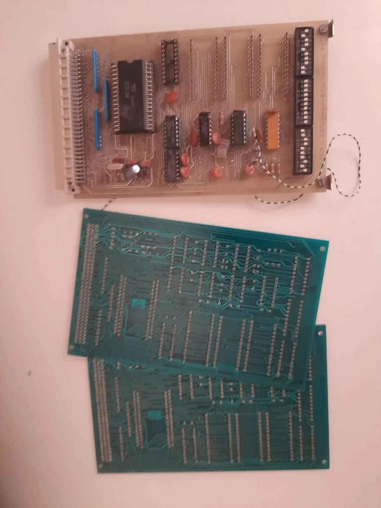
Lee channelled his skills into 3D simulators written in C — including a robot 3D simulator for PC built for the Swedish Robot Society. Back then there were no 3D graphics cards in PCs — everything was software-rendered.
For robot perception, we designed and built a miniaturized custom 3D laser range scanner from scratch — a miniaturization of the same laser scanning system used on MIT's Herbert robot, compact enough to mount directly on ICU2. A Class 3A laser with a narrow-band interference filter, stepper-motor mirror scanning 100 steps in each direction, and a Transputer processing the range data in real-time via hardware link connections.
All the electronics — from the laser driver circuits to the Transputer interface boards — were hand-designed and hand-etched PCBs. The work earned Lee a stipendium from Åsö Tekniska Gymnasium in Stockholm.
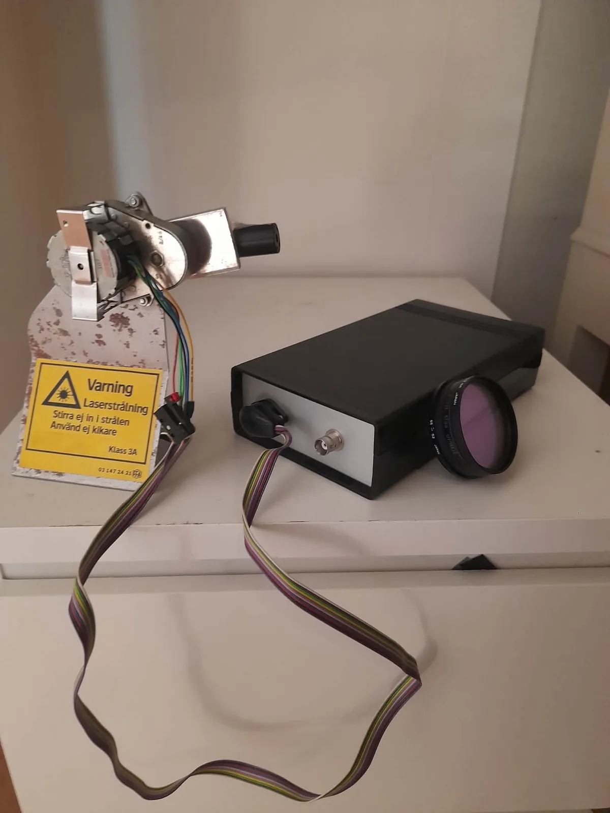
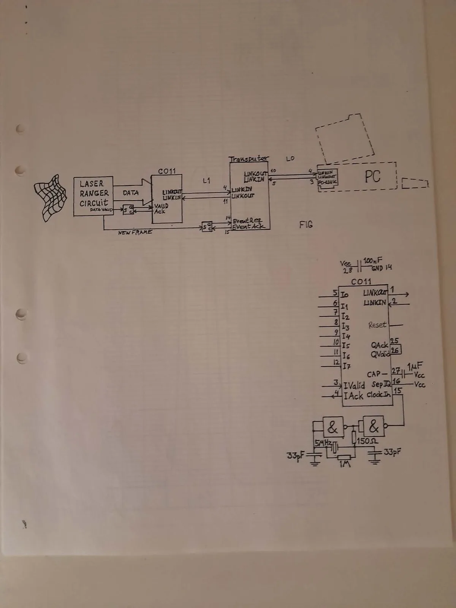
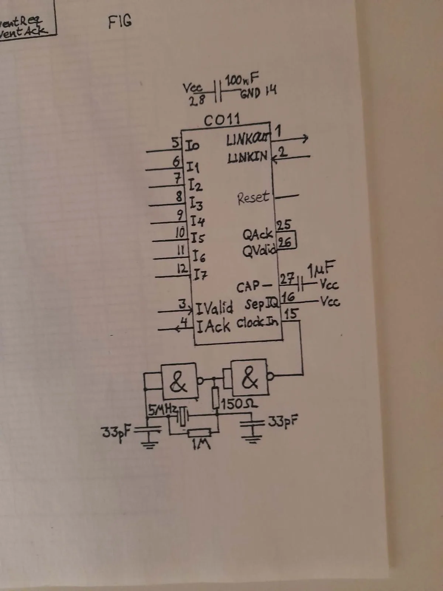
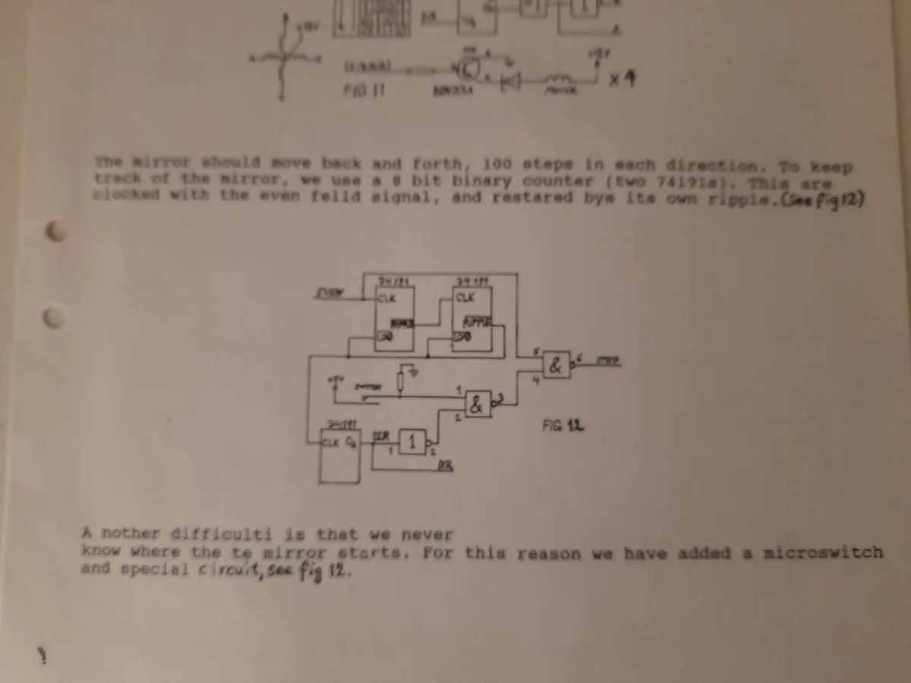
In 1992, Lee began studying at KTH (Royal Institute of Technology) in Stockholm, later continuing in 1994 at Högskolan i Skövde. The university years crystallised a radical idea: build truly parallel autonomous robots using Inmos Transputers — processors designed from the ground up for concurrent computation. We began programming in Occam, a language built specifically for the Transputer's hardware parallelism, before moving to Parallel C for more flexibility.
The architecture was inspired by Rodney Brooks' subsumption architecture from MIT — where independent behaviour layers run in parallel, each capable of subsuming lower-priority behaviours. Our key innovation: on the Transputer, any behaviour could be swapped out at runtime. We built batch tools that took standard C process code and automatically injected the scaffolding needed to make it a dynamic process — so any developer could write a normal C behaviour and have it become a hot-swappable parallel module. The system's dynamically reconfigurable processes meant the AI architecture was inherently fault-tolerant and adaptive — it would continue operating with whatever hardware modules were available.
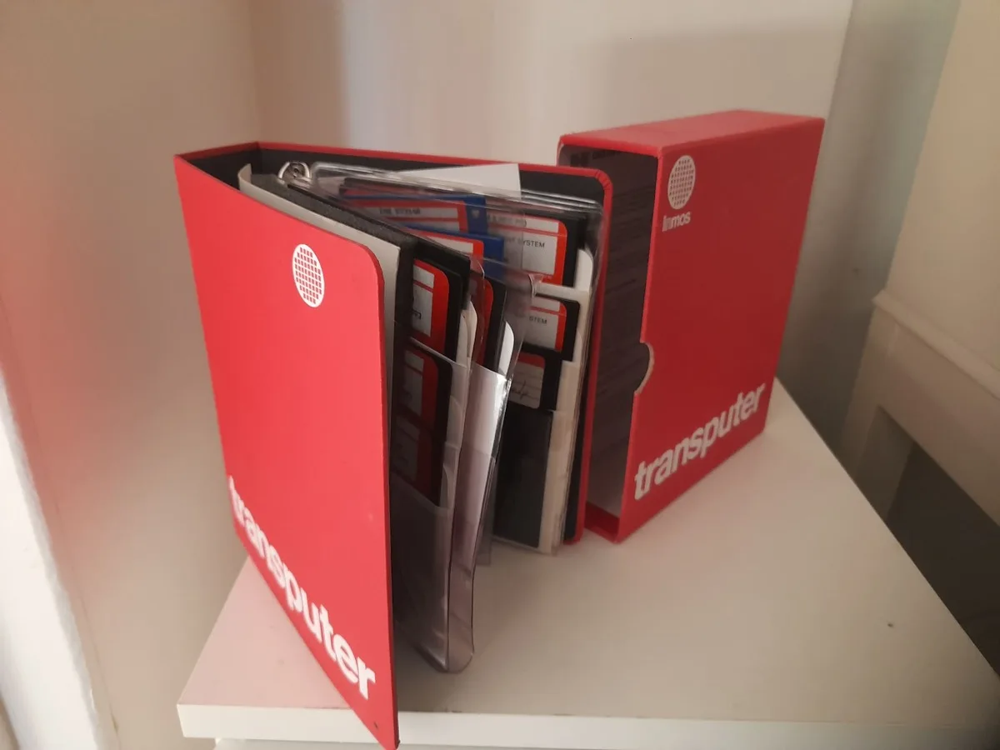
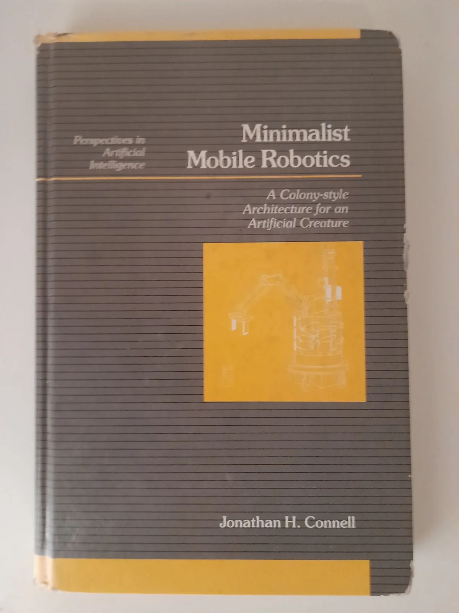
Lee attended the parallel computing conference at Rutherford Appleton Laboratory in England — the UK hub for Transputer research and the home of the Transputer Consortium secretariat — and got the opportunity to present his Transputer-based robot work.
We built ICU2 — essentially a miniaturized MIT Herbert robot, but with a fundamentally different brain. Where Herbert used 24 single-chip computer cards running static, hard-wired behaviours, ICU2's behaviours were fully dynamically interchangeable parallel C processes distributed across multiple Transputers — both onboard the robot and off-board.
This meant behaviours could be loaded, replaced, and recombined at runtime across the Transputer network. The robot competed at Lausanne through the Swedish Robot Society, where the task involved autonomously locating and collecting wooden cylinder objects. A dome-shaped platform packed with servos, optical encoders, batteries, and a custom timing-belt drive — all controlled by a distributed parallel architecture with no central controller.
Remember: this was before "add to basket" existed on the internet. Every component was sourced in person from physical shops or through company contacts. Lee secured a $25,000 sponsorship for the robot project — serious money for a student-led robotics effort in early-1990s Sweden.
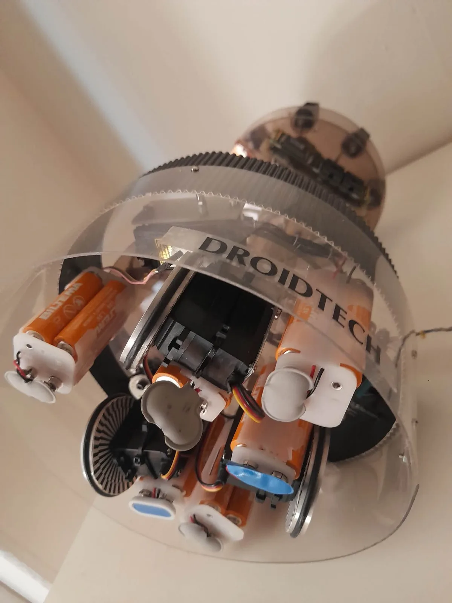
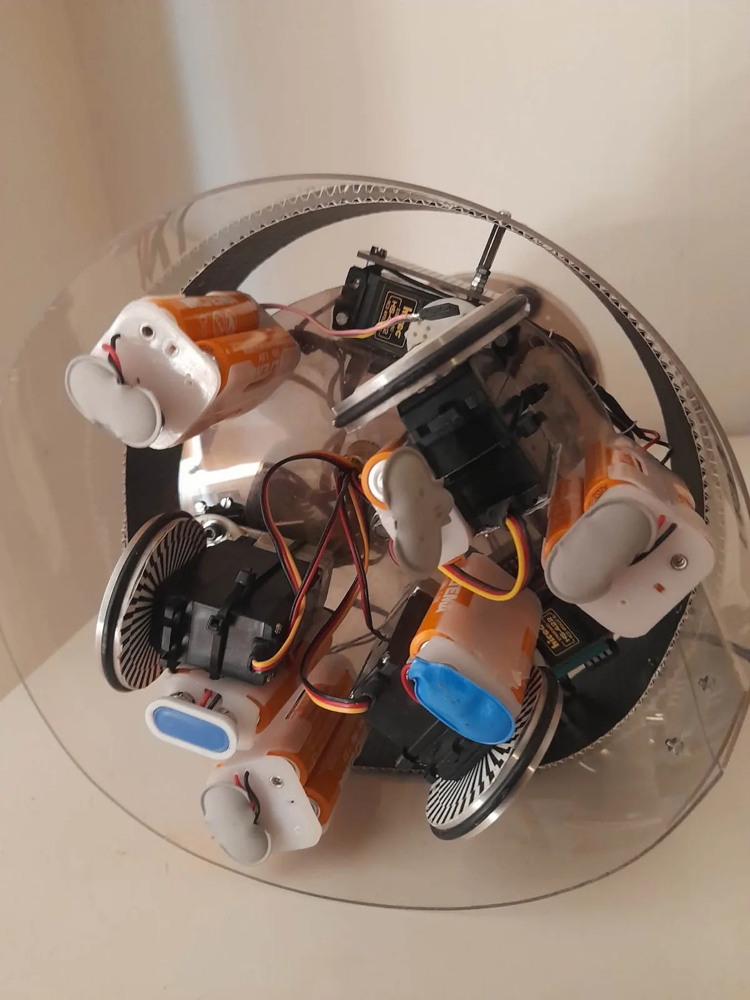
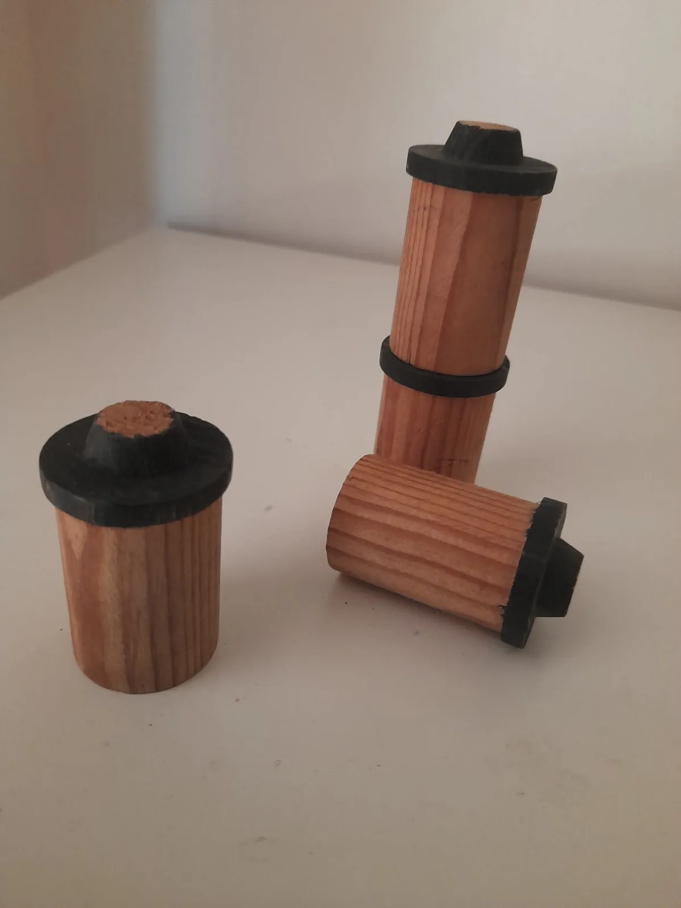
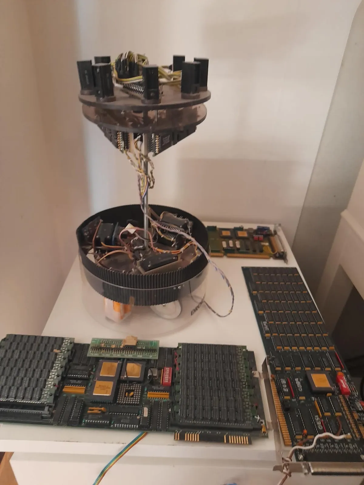
Our work was deeply inspired by the robots coming out of MIT's AI Lab — particularly Herbert, the can-collecting robot built by Jonathan Connell. Herbert used a subsumption architecture with no central model of the world: each behaviour layer (wander, avoid, detect, grab, deposit) operated independently with its own sensors.
We took this philosophy further with the Transputer's true hardware parallelism. Herbert's 24 single-chip computers each ran one fixed behaviour — static and unchangeable. ICU2's Transputer network ran fully dynamic parallel C processes that could be swapped, recombined, and redistributed across processors both on and off the robot at runtime, with hardware communication links between them.
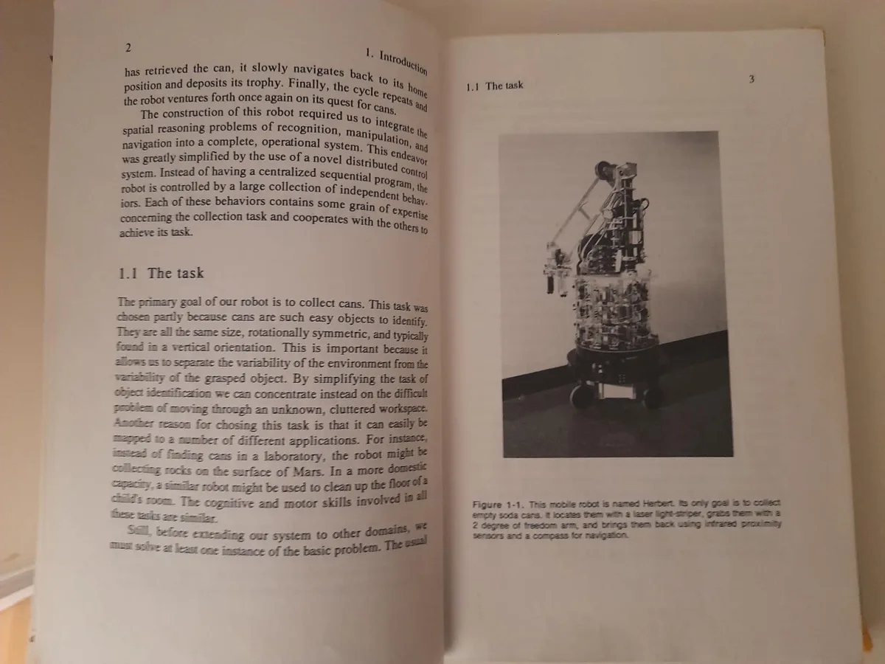
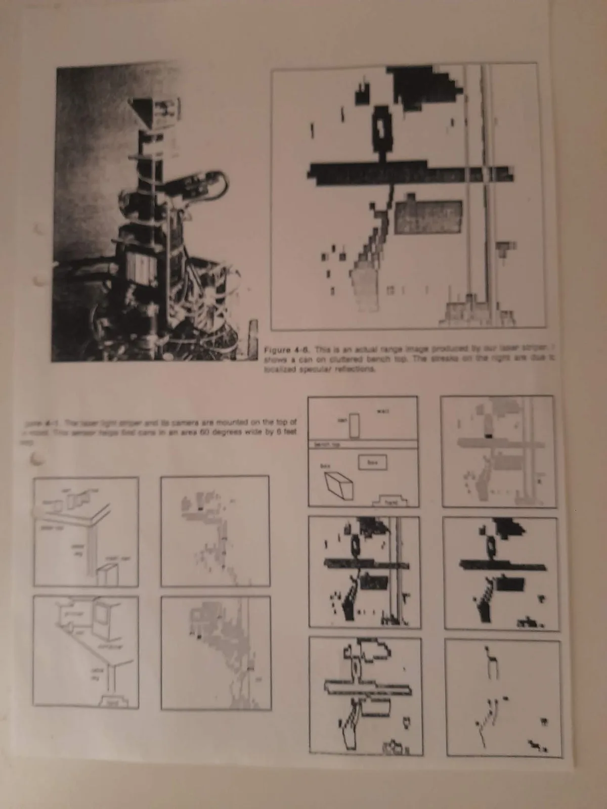
In 1997, SGS-Thomson (which had acquired Inmos in 1989) announced the last-time-buy for all Transputer products — orders by February, final shipments by June. The hardware platform vanished. The parallel subsumption architecture — with its hot-swappable behaviours and fault-tolerant design — was ahead of what commodity hardware could deliver. But the skills went elsewhere.
In 1997, Lee got an NVIDIA Riva 128 card and rewrote his 3D engine with DirectX 5. He began attending every NVIDIA developer conference — up to three times a year at different GDCs.
By 2005, Lee had added hardware occlusion queries to the open-source 3D engine Ogre and written extensive 3D engine code, middleware for optimizing indoor and outdoor scenes in simulators and games, and AI middleware for massive crowd simulations accelerated with general-purpose GPU programming using OpenGL and DirectX — before compute shaders or NVIDIA CUDA existed.
Lee worked at the Centre for Autonomous Systems (CAS) at KTH, Stockholm's Royal Institute of Technology, where he ported a control system for a Puma robot arm on a Nomad mobile robot from DOS to the QNX real-time operating system.
Towards the end of the 1990s, Lee added a landmark learning and recognition system to ICU2 — allowing the robot to build spatial memory by identifying and remembering distinctive features in its environment. This led to novel ideas about when and how behaviours should be reconfigured during navigation, and a path planning system built entirely from experience rather than pre-programmed maps. We can't disclose all the details here — the core architecture remains unpublished intellectual property.
Lee also explored models for empathy and symbol grounding — how an autonomous agent could connect abstract symbols to real sensory experience, and how modelling another agent's state could improve cooperative behaviour.
Then came a step remarkably ahead of its time: Lee introduced a virtual copy of the robot into the system, complete with its own landmark recognition system. This simulated twin could learn in parallel with the physical robot — an early form of what the industry would later call digital twins and sim-to-real transfer.
The work built on and improved techniques from a professor of robotics in England, and was intended as Lee's BA thesis at the Cognitive Science Programme at Skövde University, where Lee had studied for three years. Despite five resubmissions, the university declined the paper — first citing lack of resources to assist with formatting, and later stating they hadn't taught the techniques used and therefore couldn't approve the work.
Lee eventually secured a Ph.D position in Cognitive Science at BTH University in Ronneby (GSIL), where his experience in building mobile robots and computer games was a prerequisite for the role. He planned to work with an American professor there. However, after just three months the professor left the university without notice, and with no supervisor or research group of interest remaining, Lee left the position and returned to Stockholm. The academic path had closed, but the ideas and engineering experience lived on in Droidtech's architecture.
In 2005, Lee was invited as a guest technical speaker in Seoul, South Korea, presenting his work on accelerating indoor and outdoor scenes in 3D engines for dynamic environments. He was invited back twice more to talk about his work as a technical artist lead, helping game companies optimize performance in Unreal Engine and other engines.
Lee was also invited to speak at a game conference in Liverpool, and in 2006/2007 was invited to present at the Game Developers conference in Perth, Australia.
Over the following years, Lee worked extensively in simulators and computer games, and taught game development and 3D programming at schools.
Lee submitted a shorter form of his BA work — covering the extended landmark recognition system — to the Ubiquitous Robotics AI Conference in Gwangju, South Korea in 2009, and was invited to present. After five rejections at Skövde, the work was finally recognized by the international robotics community. The full BA paper with the novel navigation architecture was never published.
Lee worked with AI in games using JSON calls to OpenAI's APIs, then went deeper — using Qwen 3B to generate training data for a small text model targeting mobile phones and web browsers. That's where the real lessons hit: a polished API like OpenAI's spoils you rotten. When you need to generate training data with a raw 3B parameter model, you discover just how much work the big providers hide from you. The gap between a hosted API and an unpolished open-weight model is where most teams fail — and where real experience matters.
Then came Claude Code and agentic engineering. Over the past year, Lee went deep into agentic AI workflows — not just prompting, but building with AI as a true engineering partner. That shift changed everything.
In June 2025, Lee returned to embedded programming — consulting on a Battery Management System (BMS) for a company in Germany, programming their firmware using only Claude Code. No IDE, no traditional debugging tools. Just an AI coding agent and a firmware codebase.
He quickly realized that Claude Code needed to be able to debug embedded systems directly to be truly effective. So he built one: an MCP interface that lets AI agents look inside embedded processors, debug firmware, and run tests in real-time.
That MCP became ProbeCodex — an AI-powered debugging platform for embedded systems, now in public beta. The robotics work evolved into TransferOracle.ai for AI model validation and operator.droidtech.ai, a franchise platform for robotics and autonomous systems.
The same principles that drove the 1992 Transputer architecture — independent parallel agents, dynamic reconfiguration, fault tolerance, adaptive behaviour — are now achievable through agentic AI and modern compute.
You've seen what we built with no compiler — just machine code, toggle switches, and a hex display. No internet, no AI, no shortcuts. Now imagine what we do with agentic AI that codes, designs, tests, and ships alongside us.
AI-powered model validation before deployment. The Transfer Oracle audits whether machine learning models will perform reliably when moved from training to production — catching distribution drift, structural gaps, and at-risk classes before they reach the real world.
Visit TransferOracle.ai Download Operator Franchise Deck (PDF)The operational platform for robotics and embedded systems. Where the subsumption architecture's fault-tolerant, adaptive behaviour philosophy meets modern agentic AI — managing fleets, firmware, and autonomous systems at scale.
Visit Operator Download Operator Franchise Deck (PDF)After 30+ years of building robots, 3D engines, GPU middleware, and AI systems, we're at an inflection point. Lee is looking for co-founders who share the vision, and investors ready to back the next chapter of agentic AI for robotics and embedded systems.